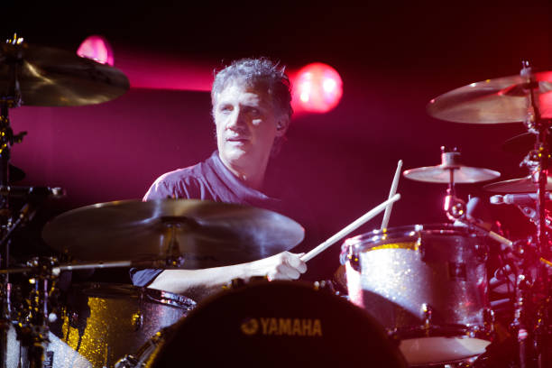
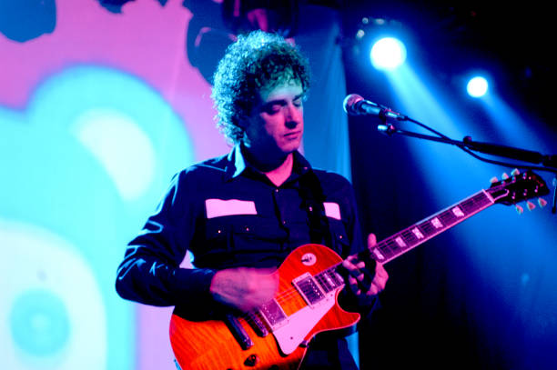
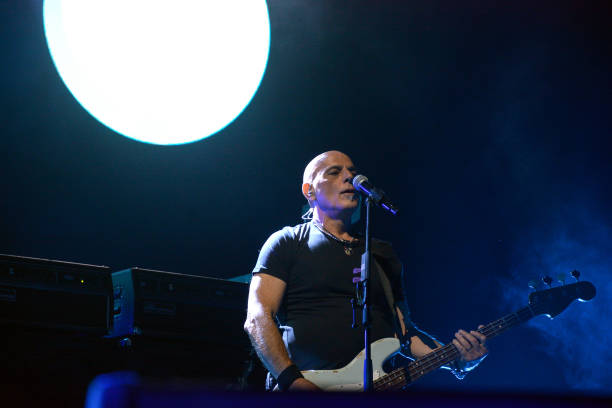

Carlos Alberto Ficicchia (Buenos Aires, 27 de marzo de 1963), más conocido como Charly Alberti, es un músico de rock argentino.
En 1981 conoce a quienes se convertirían en sus compañeros de grupo por 15 años: Gustavo Cerati y Zeta Bosio. Este contacto se dio a través de la hermana de Gustavo, Laura, a quien Charly conoció en las piletas del Club River Plate.
en 2005 funda lo que sería su nueva banda: Mole, el grupo lo conforman junto a él, Andrés Alberti (hermano de Charly, 2.ª guitarra y exintegrante de la banda Santos Inocentes), Sergio Bufi (voz y 1.ª guitarra) y Ezequiel Dasso (bajo, coros).

Gustavo Adrián Cerati (Buenos Aires, 11 de agosto de 1959-Buenos Aires, 4 de septiembre de 2014) fue un músico, cantautor, multinstrumentista y productor discográfico argentino que obtuvo reconocimiento por haber sido el líder, vocalista, compositor y guitarrista de la banda de rock Soda Stereo.
En 1983, ya como Soda Stereo, los invitaron al programa de televisión Música total de Canal 9; Cerati en ese momento trabajaba como visitador médico en el Laboratorio Boehringer de Buenos Aires, y como justo coincidía con su horario laboral, pidió el día libre por enfermedad para poder asistir. Sus jefes descubrieron su aparición en televisión, lo que significó en su despido y tomar la decisión de dedicarse por completo a la banda.
La carrera solista de Cerati arrancó en 1993 cuando todavía Soda no estaba ni cerca de extinguirse. Luego de "Dynamo"(1992) y antes del renombrado "Sueño Stereo" (1995), presentó "Amor Amarillo".
Apenas dos años después de "Último concierto" de Soda Stereo, presentó "Bocanada" (1999). Fue un disco del que sobresalen temas como “Puente”, el gran éxito del álbum.
"Siempre es hoy" (2002) continuó la línea eléctrica, con tonos más pop.
El multipremiado “Ahí vamos” (2006) encabezado con populares temas pero envuelto en canciones decididamente rockeras.
“Fuerza natural” (2009), impulsó hacia adelante a Cerati: armó una poderosa banda, editó el disco en vinilo y preparaba una serie de videoclips, casi como una miniserie.
Apenas dos años después de "Último concierto" de Soda Stereo, presentó "Bocanada" (1999). Fue un disco del que sobresalen temas como “Puente”, el gran éxito del álbum.
"Siempre es hoy" (2002) continuó la línea eléctrica, con tonos más pop.
El multipremiado “Ahí vamos” (2006) encabezado con populares temas pero envuelto en canciones decididamente rockeras.
“Fuerza natural” (2009), impulsó hacia adelante a Cerati: armó una poderosa banda, editó el disco en vinilo y preparaba una serie de videoclips, casi como una miniserie.

Héctor Pedro Juan Bosio (San Fernando, 1 de octubre de 1958), más conocido como Zeta Bosio, es un músico de rock, productor discográfico y DJ argentino que junto con Gustavo Cerati y Charly Alberti, fue el bajista de la banda de rock en español Soda Stereo.
Gustavo y Zeta compartían los mismos gustos y sueños musicales y comenzaron una búsqueda para integrar un grupo punk rock inspirado en The Police (que fue a la Argentina ese año), con temas propios en español. Ambos decidieron visitar a Charly Alberti (hijo del percusionista Tito Alberti y cuatro años más joven que Bosio), para escucharlo tocar en la batería de su padre. Allí se formó Soda Stereo, que debutó públicamente en julio de 1983. En Soda Stereo, Zeta se encargaba del bajo y los coros. También tocó la guitarra acústica y el stick.
Zeta Bosio ha tenido proyectos solistas como DJ y como parte de la banda Shoot The Radio.